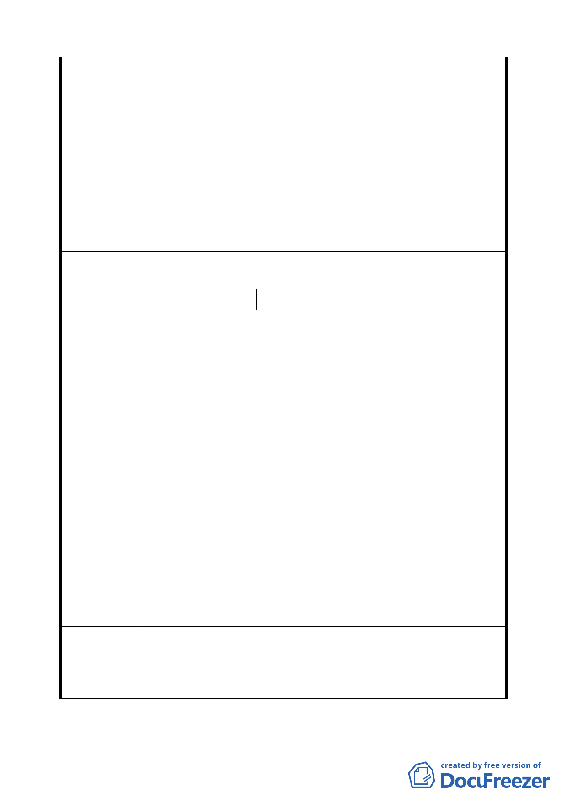

二、此計劃案內含「建築開發時程獎勵」，但僅針對第三之ㄧ
種住宅區（特）、第四之ㄧ種住宅區（特）等分區，獨厚
特定地主。
而本人所有土地位於上述計畫案內關鍵位置，不僅要集
中留設法定空地，建築物設計也增加許多限制，卻因屬
「敦化南北路特定專用區」，竟然不能比照該計畫案範圍
內其他土地，享有開發時程容積獎勵？本人土地不僅未
因此計畫受惠，還增加更多限制，實屬不公。更嚴重影
響本人土地開發意願！
為保障市民應有權益，建請 貴委員會考量區域現況及整體均
建 議 辦 法 衡發展，將本人土地所在街廓，納入開發獎勵策略中之時程獎
勵，以符合公正公平原則。
委員會決議
案內「敦化南北路特定專用區」同意納入適用開發時程獎勵範
圍。
編 號 16 陳情人 濟盟建設股份有限公司
一、本公司所有土地位於松山區延吉段三小段 891、892、893-2
等地號。其土地使用分區為敦化南北路特定專用區 B 區
（原屬第三之二種住宅區及第三種住宅區）。本基地緊臨
市民大道及敦化南路，並位於此次公展「市民大道兩側計
畫案」範圍內。
二、本公展計畫立意良好，實為提高市民大道沿線土地利用效
益、加速推動區域更新，並形塑優良之景觀及人行空間。
本公展計劃案第柒項開發獎勵策略中為加速計劃區內土
地及建築物之開發，並有效提供公共開放空間，針對計畫
陳情理由
區內絕大多數土地（第三之ㄧ種住宅區（特）、第四之ㄧ
種住宅區（特））得依規定申請建築開發時程獎勵。本公
司所有土地位於上述計畫案內關鍵位置，並因應該計畫須
集中留設法定空地，建築物設計亦多所限制，然本基地街
廓因屬「敦化南北路特定專用區」，竟不得比照該計畫案
範圍內其他土地，享有開發時程容積獎勵，實屬不公。
三、另經查本案前身貴委員會於 93 年 11 月 26 日第 536 次審
議通過之「變更市民大道兩側為商業區...案」亦將本街
廓納入獎勵開發時程範圍內。本基地所在街廓所有權人複
雜，並有地上物佔用等情事，時程及其他容積獎勵乃加速
本基地開發之關鍵誘因。
懇請 貴委員會考量將本基地所在街廓納入開發獎勵策略中時
建 議 辦 法 程獎勵，將加速都市開發，實符合社會民眾需求，亦符合公平
正義原則。
委 員 會 決 議 同編號 15。
10